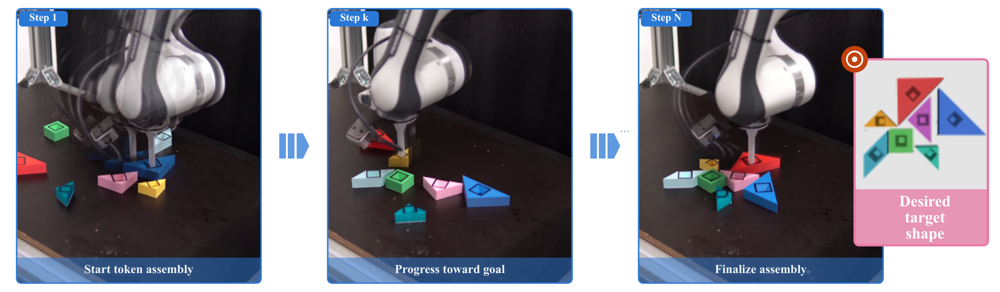
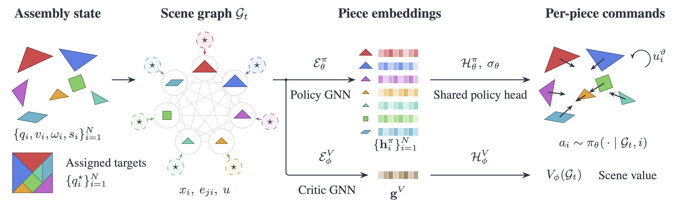
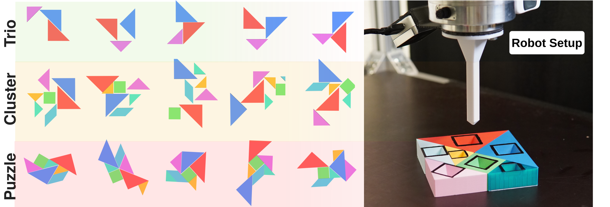
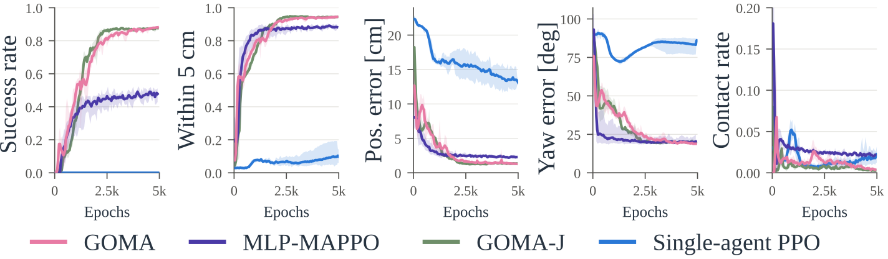
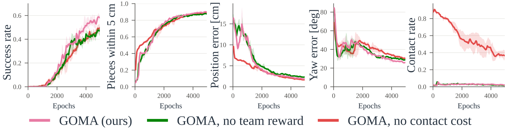
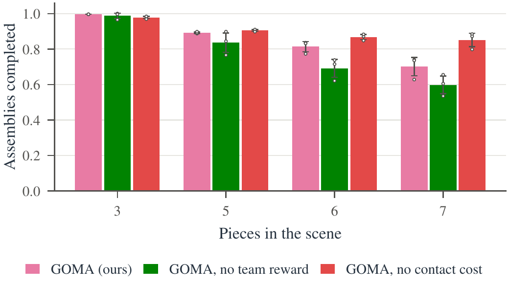

Geometric assembly requires fine spatiotemporal coordination to place parts without causing collisions or deadlocks under tight clearances. To address this, we present an object-centric reinforcement learning framework that treats each part as an agent and learns a shared policy for continuous assembly control. A graph neural network represents the pieces, their target poses, and their spatial relationships, and predicts translational and angular velocities for each component. Per-agent proximal policy optimization with a centralized graph critic directly learns motion and temporal coordination within a single feedback policy. We study this formulation through planar Tangram assembly, where pieces must slide and rotate into a given configuration while remaining on the assembly surface. Procedural generation of target configurations and randomized initial arrangements support training and evaluation across diverse assembly problems. Our experiments isolate the roles of relational structure and multi-agent optimization, and compare learned control with sampling-based planning. We demonstrate concurrent assembly in simulation and transfer the policy to sequential execution on a real robot, as our object-centric formulation decouples learned assembly coordination from low-level physical control.
Thus, we introduce Graph networks for Object-centric Multi-agent Assembly (GOMA), a graph-based multi-agent approach to geometric assembly. GOMA represents each part to be assembled as a cooperative agent and uses a shared policy trained with Multi-Agent Proximal Policy Optimization (MAPPO) to predict continuous object motions from a relational representation of the assembly state. A graph neural network (GNN) encodes interactions between parts, combining an object-centric representation with multi-agent learning toward a shared assembly objective. Our central question is whether an object-centric multi-agent formulation provides an effective basis for learning coordinated assembly. We further investigate which aspects of the representation and learning formulation matter for coordination, including how information about other parts informs each agent’s actions.

In summary, our contributions are:
To study this problem, we also introduce TangramBench, a procedural benchmark suite for planar geometric assembly based on the game of Tangram. The classical Tangram puzzle consists of seven geometric pieces (see Fig. 1) that must be arranged to form a target silhouette. Despite its small set of simple parts, tightly packed configurations create strong geometric dependencies between their motions, making Tangram a compact setting for studying coordinated assembly.
Because the piece-to-target assignment is provided, TangramBench deliberately removes assignment and shape-matching ambiguities and isolates the coordination problem. That is, TangramBench central question is:
How should the pieces move to their known targets without preventing one another from reaching them?

To expose different degrees of geometric coupling, TangramBench contains three levels of increasing difficulty.
TangramBench-Trio contains only three pieces—the two large triangles and the medium triangle—and provides a reduced setting in which coordination can be studied without the constraints induced by the full puzzle.
TangramBench-Cluster uses all seven pieces and generates compact target configurations procedurally. Pieces are first scattered and then attracted toward a common center until contact prevents further motion, with configurations containing interpenetrations rejected. This process produces irregular but relatively open assemblies, for which most target slots remain accessible from outside the configuration.
TangramBench-Puzzle contains tightly packed Tangram configurations constructed by joining pieces edge-to-edge at compatible orientations, making them closer to classical Tangram figures. These layouts create enclosed target slots and narrow access corridors, such that placing one piece can remove feasible approaches to another and the order of insertion becomes consequential.
Despite having the same median inter-piece spacing of 37mm, TangramBench-Cluster instances have a median enclosure of only 9%, compared with 57% for TangramBench-Puzzle instances. This increased enclosure makes TangramBench-Puzzle substantially more constrained, as feasible approach directions are reduced and successful assembly depends more strongly on coordinated sequencing of the pieces. All configurations are generated procedurally from fixed seeds, allowing disjoint training and evaluation pools of arbitrary size to be reproduced. Here, we provide approximately 1M, 1.1M, and 955k training configurations for TangramBench-Trio, Cluster, and Puzzle, respectively. Additionally, we provide 258 held-out configurations for each evaluation.
First, to understand the effect of each element in our architecture, we isolate the main components of GOMA and analyze training and evaluation performance on TangramBench-Trio. We compare GOMA against three architectural variants. Single-agent PPO discards both the graph and the multi-agent formulation. Here, an MLP maps the concatenated state of all pieces and targets, in a fixed order, to the velocities of all pieces, and is trained using a single clipped objective and the mean per-piece reward. MLP-MAPPO retains the per-agent formulation, including a shared policy, per-piece advantages, and a centralized critic, but replaces the graph representation with an MLP operating on each piece’s local state. Finally, GOMA-J retains the graph actor and critic, but replaces the per-agent MAPPO objective with a single joint team reward. Fig. 4-top shows the evolution of task success, the fraction of pieces within 5cm of their targets, position and yaw errors, and contact rate throughout training for all four architectures, averaged over five seeds. Here, we can see a clear progression as structure is introduced into the policy. Single-agent PPO, which uses neither the graph representation nor the multi-agent decomposition, fails to achieve meaningful task success and retains large position and yaw errors throughout training. Introducing the multi-agent formulation alone already provides a substantial improvement. MLP-MAPPO brings almost 90% of pieces within 5cm of their targets, although its overall success plateaus at approximately 50%. Adding relational message passing closes this gap, with both graph-based variants, GOMA and GOMA-J, converging to approximately 90% success and substantially lower final position errors. All methods maintain low contact rates, indicating that the differences arise primarily from their ability to coordinate precise placement rather than simply avoid collisions. Interestingly, GOMA and GOMA-J perform very similarly across all metrics, suggesting that while the per-piece advantages of MAPPO gives the policy a useful inductive bias, explicitly modeling relations between pieces through the GNN is essential for success.


Next, we study how the reward formulation influences the behavior learned by GOMA. We consider two ablations here and evaluate them on TangramBench-Clusters. In ”GOMA, no team reward”, we remove the shared terms, i.e., the maximum-distance penalty and the global completion bonus, leaving each agent to optimize only its individual reward. In ”GOMA, no contact cost”, we remove the inter-piece contact penalty. All other reward terms, architectures, and training parameters remain unchanged. In Fig. 4-bottom we again show the evolution of task success, the fraction of pieces within 5cm of their targets, position and yaw errors, and contact rate throughout training, all averaged over five seeds. All three variants learn to move most pieces close to their targets, reaching a similar fraction of pieces within 5cm and comparable final pose errors. The resulting behaviors, however, are considerably different. Removing the contact cost leads to frequent inter-piece contact throughout training, whereas both variants trained with this penalty reduce contacts to near zero. Removing the shared reward has little effect on collision avoidance or coarse goal reaching, but results in lower final assembly success. This suggests that the individual rewards are sufficient to drive pieces toward their respective targets, while the shared terms help translate this individual progress into completion of the assembly as a whole.
We further evaluate these reward variants as the number of pieces increases. Fig. 5 compares success on assemblies containing three, five, six, and seven pieces, testing whether the contribution of the shared reward becomes more pronounced as the number of simultaneously interacting pieces grows. We trained on a scene with seven objects and used this trained policy for evaluation of all different piece counts.

Finally, we compare GOMA against myopic and sampling-based motion planning. An attractive-only artifical potential field (APF) serves as the myopic baseline. It drives every piece independently and straight toward its target, using the same tracking controller as the planners. Joint rapidly-exploring random tree (RRT) (RRT-J) plans one path for all pieces at once with RRT-Connect in the 21-dimensional configuration space and with mesh collision checks. Per-piece RRT (RRT-P) plans a 3-dimensional path for every piece against the start poses of the others and executes all paths at once. Both planners are also evaluated with a replan mode, where a new plan is generated every 5s. This is added so that they can react to the movements of other pieces. Under one-piece-at-a-time execution, the joint plan is followed piece by piece, and the per-piece paths are planned in sequence with the earlier pieces assumed at their goals. All methods receive the same target assignments and the same initial configurations. The planners are given the 117 of 258 held-out instances whose start arrangement passes their collision check and a 150 s episode, so that planning time does not decide the outcome. In Tab. I we compare the methods on TangramBench-Cluster and TangramBench-Puzzle. We report assembly success, final position error, the fraction of control steps with inter-piece contact, the median time to completion, and the computation time at inference.
| Method | Succ. (%) | Err. (cm) | Contact (%) | Time (s) | Compute |
|---|---|---|---|---|---|
| TangramBench-Cluster | |||||
| GOMA (ours) | 75 | 1.0 | 4 | 8 | 0.68 ms |
| APF | 3 | 3.8 | 99 | 80 | ≈ 0 |
| RRT-J | 73 | 1.9 | 44 | 20 | 774 ms |
| RRT-J +replan | 98 | 0.3 | 12 | 21 | 49 ms |
| RRT-P | 3 | 4.0 | 98 | 119 | 42 ms |
| RRT-P +replan | 9 | 3.2 | 95 | 85 | 6.7 ms |
| TangramBench-Puzzle | |||||
| GOMA (ours) | 41 | 1.7 | 4 | 24 | 0.68 ms |
| APF | 0 | 4.3 | 100 | – | ≈ 0 |
| RRT-J | 58 | 3.3 | 59 | 24 | 6.8 s |
| RRT-J +replan | 88 | 1.5 | 37 | 43 | 1.1 s |
| RRT-P | 0 | 4.5 | 99 | – | 48 ms |
| RRT-P +replan | 0 | 4.1 | 99 | – | 0.20 ms |
TABLE I: GOMA against the APF controller and joint (RRT-J) and per-piece (RRT-P) RRT planning, planned once or replanned every 5 s, on the held-out TangramBench-Cluster and TangramBench-Puzzle.
These results highlight the importance of coordination. Crucially, APF and RRT-P assemble at most 9% of the clusters and none of the puzzles, with inter-piece contact during nearly every control step. Joint planning with replanning achieves the highest success under concurrent execution (98% on TangramBench-Cluster and 88% on TangramBench-Puzzle), compared with 75% and 41% for GOMA. However, its contact rates are also higher. 12% and 37%, respectively, compared with 4% for GOMA on both benchmarks. Additionally, GOMA requires approximately 0.68ms per inference and achieves median completion times of 8 s on TangramBench-Cluster and 24 s on TangramBench-Puzzle, compared with 21 s and 43s for RRT-J with replanning. Thus, GOMA offers fast, low-contact execution, while joint planning with replanning remains more reliable at completing tightly constrained assemblies.
To demonstrate the applicability of GOMA beyond simulation, we perform a qualitative zero-shot sim-to-real demonstration on a Franka FR3 manipulator, without additional policy training or fine-tuning. The robot is controlled using the CRISP Cartesian impedance controller and is equipped with the custom square-peg manipulation tool. Piece poses are estimated using a hand–eye calibrated camera setup consisting of a scene-mounted Intel RealSense D435i RGB-D camera for global pose estimation and a wrist-mounted RealSense D405 for close-range localization of the insertion socket. We estimate the pose of each piece using FoundationPose, with HSV color segmentation providing an individual mask for each of the seven pieces. Known geometric offsets transform the estimated model poses to the corresponding piece centroids, while a geometric consistency filter rejects estimates that would imply physically impossible overlaps.
Since the physical robot can manipulate only one piece at a time, we execute the multi-agent policy sequentially. A round-robin strategy selects among unfinished pieces, allowing a piece to remain temporarily in place and be revisited in subsequent rounds. For each selected piece, the wrist-mounted camera first localizes its insertion socket, after which the robot engages the tool and executes the motion predicted by the corresponding agent. During execution, the pose of the manipulated piece is updated from the robot’s forward kinematics, while the poses of the remaining pieces are obtained from perception. The resulting object poses are used to reconstruct the interaction graph before each policy query. Fig. 1 shows the resulting real-world assembly sequence, illustrating that the policy can be deployed on the physical setup without additional real-world training.
In this work, we studied planar geometric assembly as a coordinated multi-object manipulation problem. We introduced TangramBench, a procedural Tangram benchmark with graded levels of geometric coupling, together with simulation and a corresponding real-robot setup. On this benchmark, we formulated assembly from an object-centric multi-agent perspective and proposed GOMA, where each piece is represented as an agent and relational information is exchanged through a graph neural network. Our experiments investigate which components of this formulation enable coordinated behavior and compare the resulting policy with classical motion-planning approaches across increasingly constrained assembly configurations.
This work was supported by the German Federal Ministry of Research, Technology and Space (BMFTR) under the Robotics Institute Germany (RIG) and the DEMETER project (Grant no.: 01DR25003). This work was also supported by a hardware donation from NVIDIA through the Academic Grant Program, and by the Lichtenberg high-performance computer of TU Darmstadt.
Claude (Anthropic) was used for grammar polishing and for coding assistance in the experiments and in generating the splash images in Fig. 1. All outputs were reviewed and verified by the authors.
This work has been submitted to the IEEE for possible publication. Copyright may be transferred without notice, after which this version may no longer be accessible.
@article{goma2026tangram,
title = {It Takes Two to Tangram: Multi-Agent Object Centric Reinforcement Learning for Assembly},
author = {Knau{\ss}t, Paul and Pompetzki, Kay and Bohlinger, Nico and Funk, Niklas and de Farias, Cristiana and Findeisen, Rolf and Peters, Jan},
journal = {Under review},
year = {2026}
}